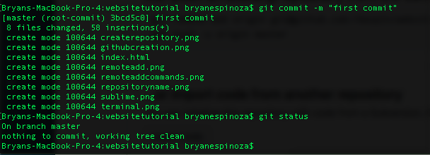

Login or create a github account

"start a project" or, if you have already done this, create a new repository.

Give it a name, description, etc.

After creating the repository, you will be redirected to this page. keep it open for the time being.
Go to your preferred text editor (i like sublime for front end), and code up your website. Make sure that every file relevant to the website is in a localized directory.

Below is a screenshot of my terminal commands. The commands were `cd desktop` (change the working directory to the desktop), `mkdir websitetutorial`, which makes a directory called websitetutorial (directory = folder) on your desktop. This is where everything for the website will be located. `pwd` prints the current working directory that you are located in (this is super important). For everything git, you want to be in the proper directory. `ls` lists the files located in websitetutorial. In websitetutorial, there are various pictures, and MOST IMPORTANTLY, a file named "index.html". Having the main html page named index.html lets GitHub know that it should create a gitpage for your website.
after you are finished coding your website(I'm just using a basic html page for this tutorial), refer back to the previous repository page that came up after creating the repository on github.
This next photo is what you will input into your terminal/whatever you use for git.

`pwd` ensures you are in the proper directory that contains all relevant files.
`git init` (to my understanding) initializes an empty Git repository in the directory. You only have to do this once for the directory.
The next two commands are very important. They are part of a 3 part process when you wish to commit things to github. `git add . ` is a command that stages your files. Think of putting code on github as a 3 part process. You add the files to a stage (you stage the files), you commit the files, then you push the files to the master branch. This first command, `git add . ` will stage your files. The ` . ` refers to the current working directory, so basically every file in your current working directory (which can be displayed using the command `pwd`, print working directory). The command following `git add .` is git status. This shows the status of your branch. As you can see, it refers to the staged files as the changes to be commited.
The next command is the 2nd part of the 3 step process, `git commit`. Our command reads `git commit -m "first commit"`. The -m is a flag that allows us to add a string that goes along with our commit. "First commit" is just the accompanying string. It can be things like the date, what you are committing, "added readme file 5/3/21" or anything. We see that when we call `git status`, it says that our working tree is clean. This is a good thing. We want our working tree to be clean.
Here is an example of when our tree is not clean. I have added files to the directory, and modified files in the directory. The branch recognizes these changes. They are referred to as "untracked files", and it says we have nothing to commit because we haven't staged anything using the git add command. You can see the changes after calling git add. I executed `git add pwd.png`, which staged the pwd.png file for committing. It still has the other untracked files listed. If we executed `git commit` right now, only pwd.png would be committed, as it is the only thing to have been staged. The other modified files are unstaged at this point. After executing `git add .`, we are adding everything in the working directory to the staging area. git status tells us that all of our files are staged and ready to commit.
After we have added our files and commited them, we are ready to add the necessary remote to our repository. This is done using the command `git remote add url`, where url is the repository url given to us after creating the repository on github. This is usually done once, unless you wish to change the remote for that directory later down the line. But you should worry about that later.
Now this next step is the 3rd part of our process, `git push`. This command wil push your commits to the master branch in github. Don't really worry about the semantics of master branches/branch anything right now, get comfortable with the basics first. `git push origin master` pushes your commits to github. From there, github will handle everything
Now, I know that what I've listed seems like a lot, and it might take a while before you are comfortable with everything. I will give you this cheatsheet for easy reference
After all of your code is put on github, there's only a few things left you have to do. Navigate to your github repository for the website. From here, you can view code, edit it directly on github, see past changes and everything. Navigate to the settings toolbar.
Scroll down to the portion of github pages. It is originally disbaled. Enable it by selecting the first option, `master branch`, and select save.
Now your website will be ready to be accessed, with the link shown here. Github may take a short while to initialize everything and for everything to go live, including changes, but it should eventually be deployed.